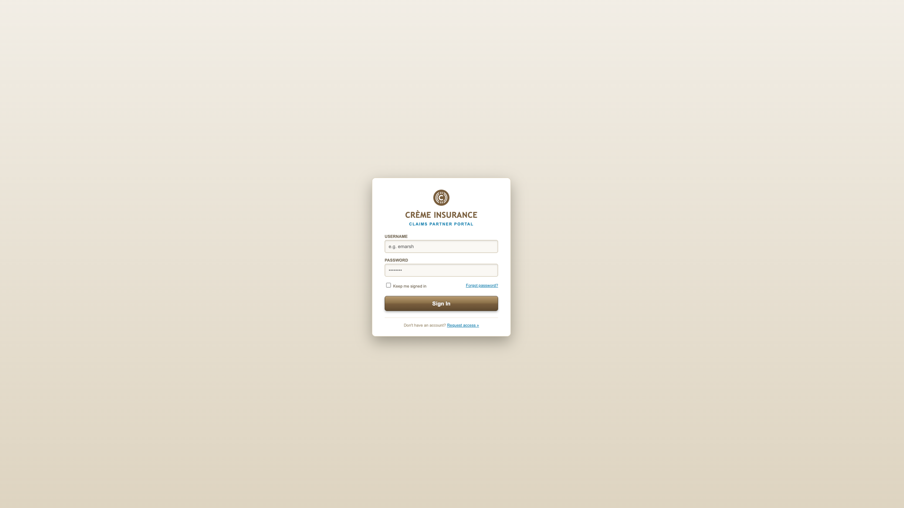
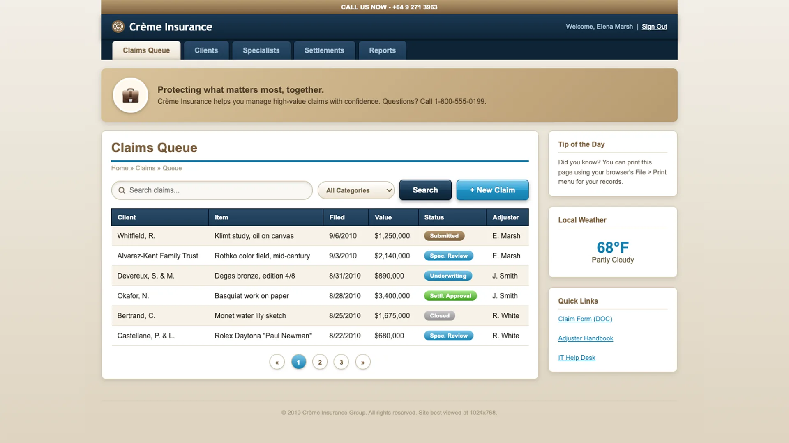
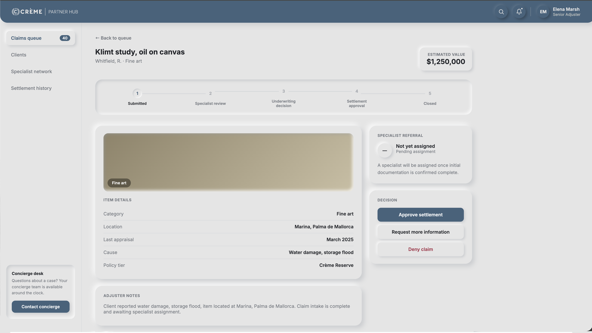
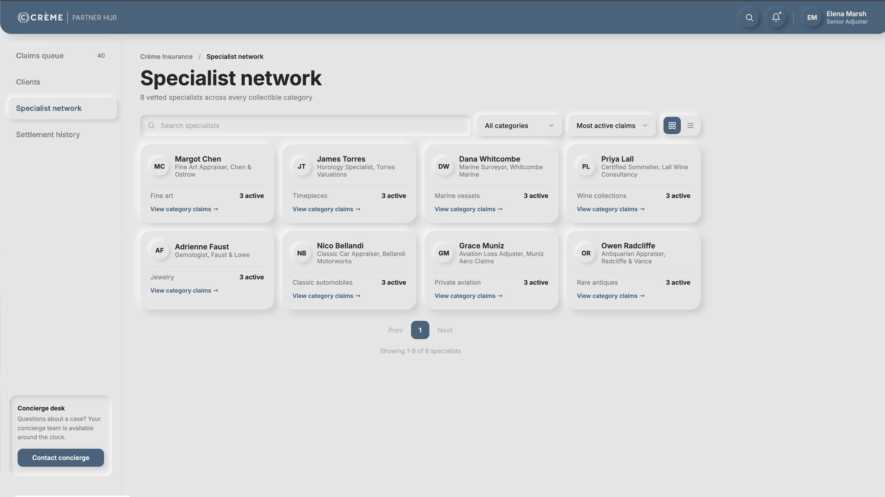
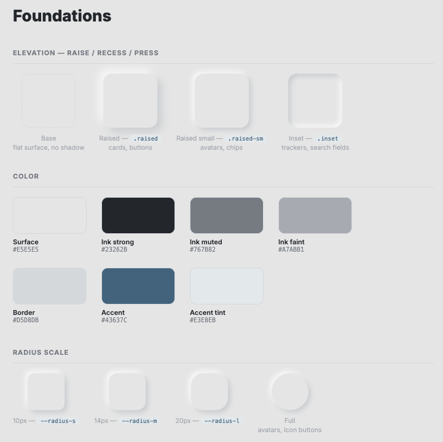

The
Problem
Outdated Legacy Architecture
The legacy Crème Insurance portal relied on obsolete 2010 skeuomorphic patterns, heavy glossy gradients, rigid 980px table layouts, and fragmented popup alerts. Managing high-value claims required high visual effort, slowing down senior adjusters during critical evaluation workflows.
Conflict Between Tactile Softness and Legibility
Designing a modern soft-neumorphic interface presented an immediate technical challenge: soft surface elevation and high-contrast WCAG legibility frequently fought each other. If raised cards and inset fields were kept visually soft, text contrast and icon visibility risked being compromised.
Separating Surface Elevation from Ink Contrast
The solution was decoupling visual depth from typographic contrast entirely. Surface elevation (depth, tactility, shadows) needed to be managed by one independent token system, while text and status indicators (ink, contrast, legibility) were controlled by a separate, strict WCAG-compliant color scale.

I engineered two independent CSS token systems: one for surface elevation and one for semantic contrast.
Collaborating with AI tools (Claude & Gemini) for rapid layout exploration, token architecture, and code implementation, I established an elevation scale (.raised, .raised-sm, .inset) for physical depth alongside a separate contrast scale for typography. Elevation remained soft without sacrificing reading clarity.

The Implemented
Partner Hub
The final system powers a live, fully working client-side application, featuring an authenticated sign-in flow, a claims queue with status tracking, a specialist network with category filters, and a settlement history. All views run on the unified, dual-token design system documented in code.




Neumorphic Design System
& Component Tokens
To ensure total UI consistency across components, I established a dedicated design system specifying spatial elevation rules, typography scales, interactive states, and soft dual-shadow CSS custom properties.
System & Technical
Execution
Detailed breakdown of how the UI design, component tokenization, and frontend implementation were structured and shipped.
I utilized AI models (Claude and Gemini) as collaborative tools across every phase of the project: iterating on layout concepts, generating semantic CSS tokens, authoring Vanilla JS state management for dynamic views, and building comprehensive design system documentation alongside the code.
Overwriting legacy 2010 skeuomorphism required building a repeatable component architecture: three elevation classes (.raised, .raised-sm, .inset) using dual light/dark box-shadow CSS variables, paired with a consistent border-radius scale (--radius-s at 10px through 20px) to guarantee tactile consistency across all UI components. View the live implementation at design-system.html.
Replaced rigid top tabs with a unified App Shell featuring a persistent left sidebar. This expanded workspace houses four distinct views, Claims Queue, Clients, Specialist Network, and Settlement History, complete with real-time category filtering, sort controls, and dynamic grid/list layout toggles.
Eliminated disruptive native browser alert popups by implementing a client-side toast notification system and modal confirmation overlay. Actions like settlement approval, document requests, and specialist reassignments trigger immediate in-app visual feedback without breaking workflow continuity.
Looking
Back
What Went Well?
End-to-End DeliverySuccessfully redesigned and developed the full system from initial architecture to a working, responsive application, complete with interactive navigation, filtering, and modal flows.
AI-Accelerated WorkflowLeveraging AI tools (Claude & Gemini) significantly streamlined visual iteration, CSS design token architecture, and Javascript frontend implementation.
Systematized NeumorphismDecoupling depth elevation from typographic contrast allowed the UI to maintain its tactile character while adhering to WCAG AA legibility standards.
What Could I Have Done Better?
Automated CI/CD Contrast AuditingWhile contrast scales were manually calibrated during design, integrating an automated contrast-linter directly into the build pipeline would ensure automated compliance checks across all dynamic states.